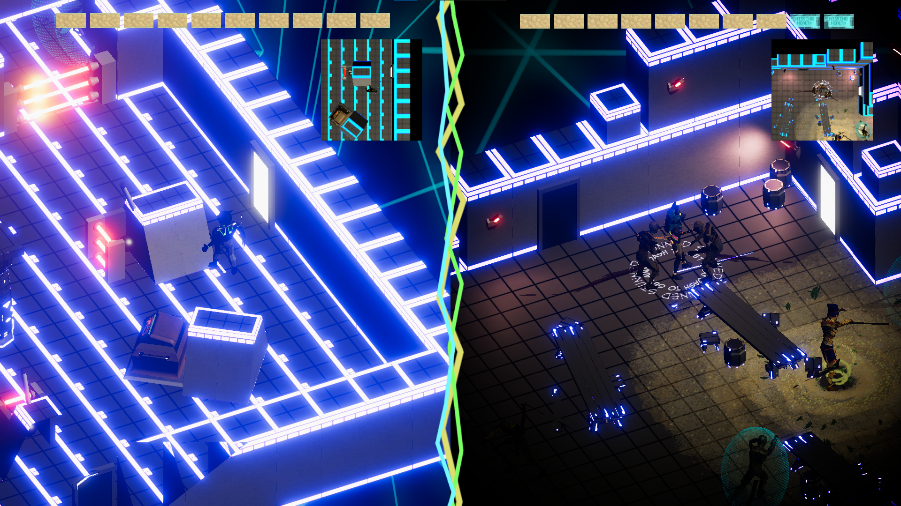
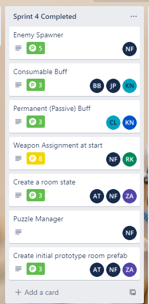

Tomb For Two
Fall 2022
Quickstart
In early 2022, I was a part of a core group of students that created Spartasoft Studio. The Michigan State University affiliated club had a few goals, but they all culminated into one idea: to give students a full-studio game development experience outside of class. During Spring 2022, I served as a programming director on the studio's initial title Knight By Night. The first project was an amazing experience that gave us directors a better sense of structure in handling cross-discipline communication and organization. Heading into Fall 2022, a meeting was held before classes to concept the next game and the methods that would help in development. This all lead to Tomb For Two. Read ahead!
Worthwhile Agile
Tomb For Two is a local-multiplayer dungeon crawler where Anubis and Bastet must explore a futuristic pyramid to reach other and escape countless rooms full of puzzles and enemies. The "dungeon" would be a randomly-generated collection of rooms that would lead to gameplay variety and replayability for all players. Right away, the game posed many new considerations for the studio: local-multiplayer, random level generation, and a 3D perspective. Spartasoft Studio also has a goal of inviting less-experienced game developers into the studio setting, meaning every discipline team had a wider range of skill levels that had to be considered. To pave the way for the programming team, it was time for agile development principles.
As a programming director, it was an early goal to concept the overall systems that would then be split into smaller tasks throughout the semester. It helped immensely to view this process in an agile sense: each system being an "epic" that would be broken down into smaller "stories" that programmers would be able to claim. I made it a goal of mine over the semester to ensure each story preserved the image of the overall epic, so everyone on the team knew what they were contributing and how it added to the total system. To handle the organization of tasks, I set up and helped manage a Trello board that was crucial in the team's workflow. The board had a general lifetime of a task:
- Open Task
- In-Progress
- For Review
- Completed (added to correct sprint pile)
A sample column of Trello cards can be seen on the right. I also made use of a points system that helped detail tasks. It follows the popular fibonacci sequence method of pointing stories, for example: 1 is a very simple task, 3 is a day's worth of work, while a 5 is a longer term goal. This made quantifying tasks a bit easier and helped scope appropriately when creating new stories. If a task's point value was far too large in the sequence, it would be a good indicator to split that task into two smaller stories.
I served as a scrum master weekly, which entailed detailing new tasks and updating the Trello board with the entire team present. A nice perk of the Trello board was the satisfaction of moving a card from the initial state all the way to completed (even project management can be gamified if you try hard enough!). Weekly sprints led to the aformentioned weekly scrum meetings where each programmer would be able to describe what they worked on, what's being worked on next, and any barriers in their way. The team was overall very receptive to these agile methodologies and were always willing to walk through their progress before the entire team.
Cross-Disciplined
Another major component of the project was being a spokesperson for programming across the project. This involved many different responsibilites:
- Being a communication point for art, design, and audio team members to ask questions to
- Being a liaison for the team to ask questions and clarify design among the other disciplines
- Being a mentor for programmers by answering questions and helping on any asset creation issues
As a leader, it's a goal of mine to not only put my all into the tasks stated above, but also inspire the next wave of leaders in the space. I pursued this during Tomb For Two by encouraging others to step up on handling tasks and be allies for everyone on the team. As mentioned earlier, the programming team was made up of a range of experience levels. There was a group of experienced upperclassmen in the Michigan State University Game Development major/minor, but there were also newer developers that were either previously designers or new to the university. This helped give me some direction in the creation and assignment of tasks by putting a focus on pair programming. I designed most tasks to be a joint effort between a more confident programmer and someone that was looking for more experience in that specific task. This cultivated a sense of leadership and mentorship across the entire programming team, contributing to a team-wide unity that made communication even stronger. When there were questions, several programmers stepped up to always hop on a Discord channel or voice chat to help. The same could be said for times when other disciplines reached out for programming-focused questions or concerns.
What I Learned
My time as a programming director on Spartasoft Studio was an amazing experience that strengthened my leaderships skills and project organization. Tomb For Two pushed me to focus even more on relationships among the team and to ensure there was never a programmer left behind. Agile principles gave our weekly meetings and task management structure. A focus on pair programming and instilling leadership in others helped bring the team together and finish a product that we were all proud of.
A through-line of the experience was my passion for being a leader and mentor for others. Being able to provide that support and expertise for the team was an absolute joy, and only confirmed for me further that it's a position I could gravitate toward.
Wanna see more?
Tomb For Two was released on December 7th, 2022 and can be played on itch.io here!
In early 2023, I stepped away from Spartasoft Studio to focus on my final semester at Michigan State University. However, the club is still in full force! If you would like to stay updated on future efforts and releases, make sure to bookmark the itch.io page. Thanks for reading!